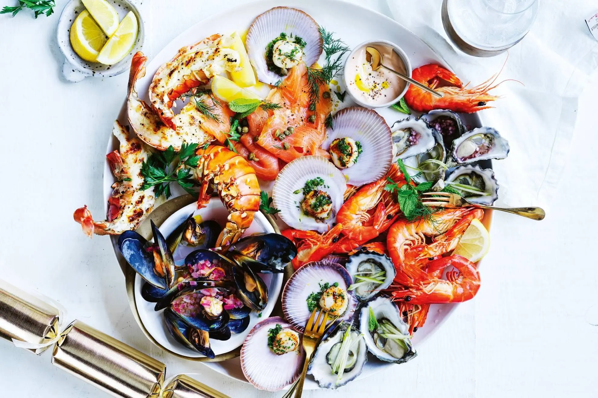
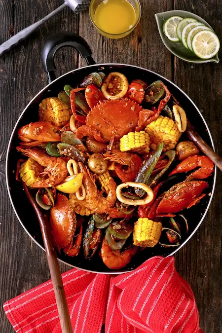

Fresh Daily Seafood
We serve only the freshest seafood sourced daily.
Seafood Restaurant

Experience the best seafood made with fresh ingredients and served with passion.
Reserve A TableWe serve only the freshest seafood sourced daily.
Supporting local fishermen and suppliers.
A comfortable place for families and friends.
Enjoy relaxing ocean-inspired dining.

Book your table now and enjoy an unforgettable dining experience.